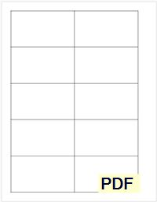
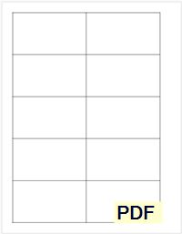

bitsycard.com at lemonmama.com/bitsycard
Welcome, dear visitor, to bitsycard.com at lemonmama.com/bitsycard, on lemonmama.com
So, what even is a bitsycard? ...
In a sentence, a bitsycard is a card with compelling images and messages, the size of a business card. It's like a little canvas on which you can make your own art or a little paper on which you can write your own ideas!
Example: photo of a bitsycard:
 Example 2: photo of another bitsycard:
Example 2: photo of another bitsycard:
 And now, dear visitor, here are some downloads for you to download and cut out and draw/write yourself to create your own bitsycards:
Download free PDF file Bitsycard template 
Download free ODS file Bitsycard template
And now, dear visitor, here are some downloads for you to download and cut out and draw/write yourself to create your own bitsycards:
Download free PDF file Bitsycard template 
Download free ODS file Bitsycard template  Finally, the current best place for news now on bitsycard is here:
https://lemonmama.com
Thanks for visiting, and enjoy!!!
Finally, the current best place for news now on bitsycard is here:
https://lemonmama.com
Thanks for visiting, and enjoy!!!